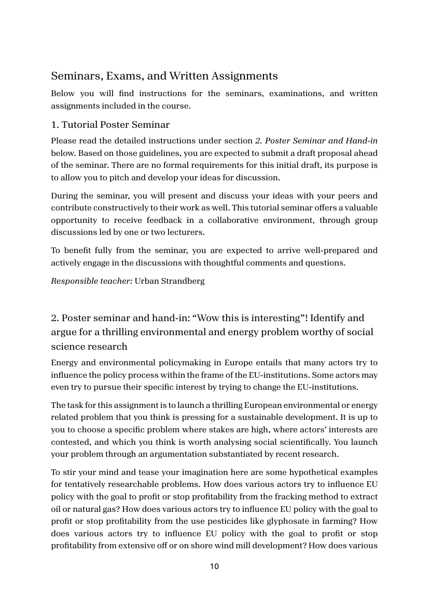
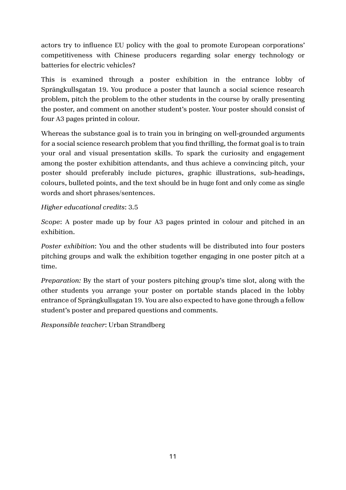
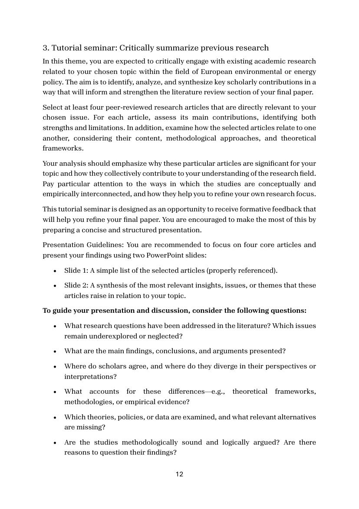
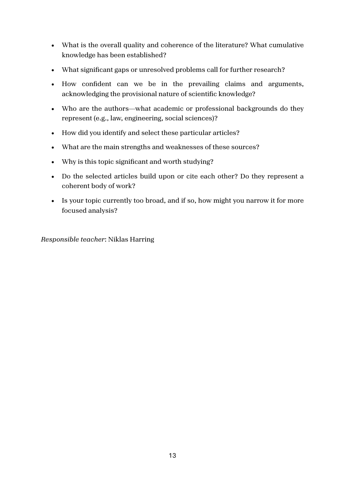
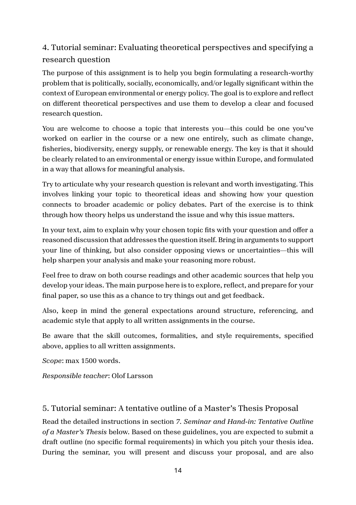
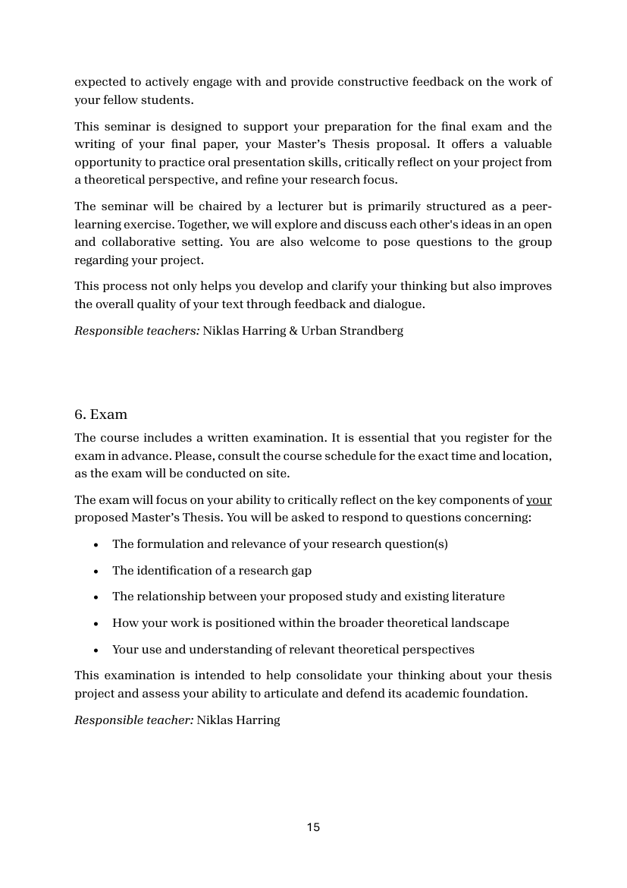
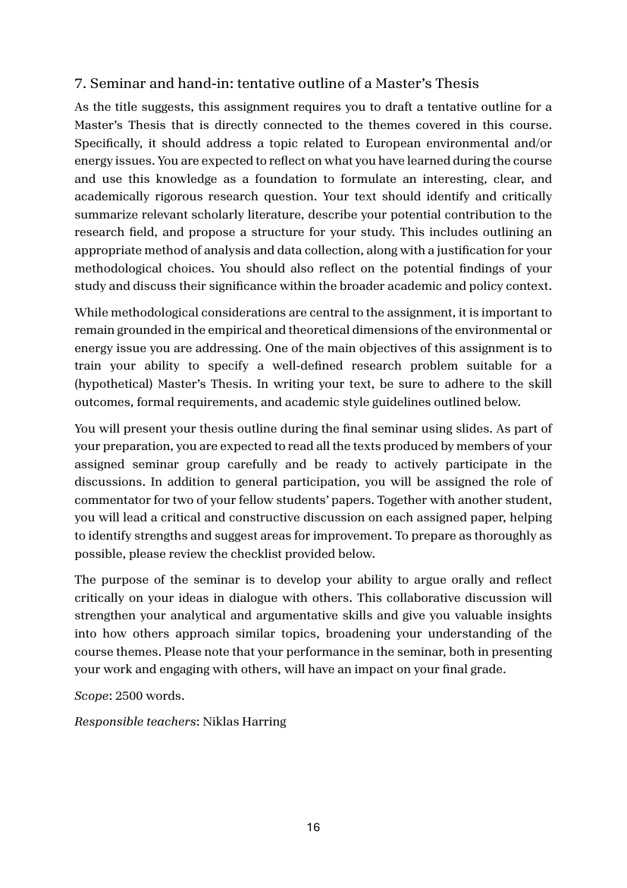
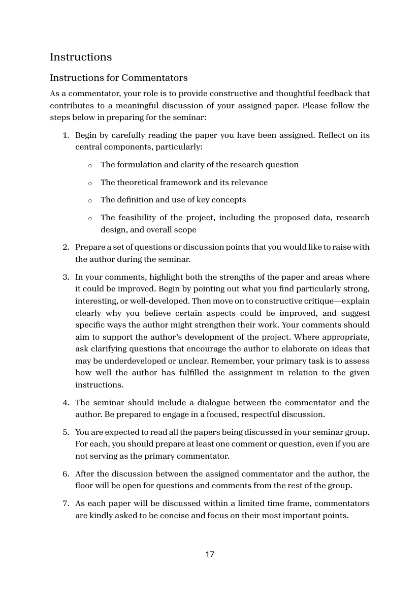

Belägg för examinationsmatrisens markeringar · Källa: kursguide H25
Tabellen nedan styrker examinationsmatrisens markeringar för EU2210 mot kursguide H25. Kursen ges gemensamt för MAPS och IAGG och innehåller sju numrerade uppgifter (Tutorial Poster Seminar, Poster seminar och inlämning, tre tutorial seminars, Exam, samt Seminar och hand-in av Master's Thesis outline).
| Examinationsform (per matris) | Citat ur kursguide H25 | Källa |
|---|---|---|
| Salstentamen | The course includes a written examination. It is essential that you register for the exam in advance. Please, consult the course schedule for the exact time and location, as the exam will be conducted on site. |
Sid 15 — Se sida → |
| PM / forskningsplan | The purpose of this assignment is to help you begin formulating a research-worthy problem that is politically, socially, economically, and/or legally significant within the context of European environmental or energy policy. The goal is to explore and reflect on different theoretical perspectives and use them to develop a clear and focused research question. … Scope: max 1500 words. |
Sid 14 — Se sida → |
| Uppsats / research paper | As the title suggests, this assignment requires you to draft a tentative outline for a Master's Thesis that is directly connected to the themes covered in this course. … Your text should identify and critically summarize relevant scholarly literature, describe your potential contribution to the research field, and propose a structure for your study. This includes outlining an appropriate method of analysis and data collection, along with a justification for your methodological choices. … Scope: 2500 words. |
Sid 16 — Se sida → |
| Litteratur-/forskningsöversikt | In this theme, you are expected to critically engage with existing academic research related to your chosen topic within the field of European environmental or energy policy. The aim is to identify, analyze, and synthesize key scholarly contributions in a way that will inform and strengthen the literature review section of your final paper. Select at least four peer-reviewed research articles that are directly relevant to your chosen issue. For each article, assess its main contributions, identifying both strengths and limitations. |
Sid 12 — Se sida → |
| Seminarieinlämning / memo | Please read the detailed instructions under section 2. Poster Seminar and Hand-in below. Based on those guidelines, you are expected to submit a draft proposal ahead of the seminar. There are no formal requirements for this initial draft, its purpose is to allow you to pitch and develop your ideas for discussion. Read the detailed instructions in section 7. Seminar and Hand-in: Tentative Outline of a Master's Thesis below. Based on these guidelines, you are expected to submit a draft outline (no specific formal requirements) in which you pitch your thesis idea. |
Sid 10, 14 — Se sida → |
| Muntlig presentation | This is examined through a poster exhibition in the entrance lobby of Sprängkullsgatan 19. You produce a poster that launch a social science research problem, pitch the problem to the other students in the course by orally presenting the poster … You will present your thesis outline during the final seminar using slides. |
Sid 11, 16 — Se sida → |
| Seminariedeltagande | During the seminar, you will present and discuss your ideas with your peers and contribute constructively to their work as well. … To benefit fully from the seminar, you are expected to arrive well-prepared and actively engage in the discussions with thoughtful comments and questions. You are expected to read all the papers being discussed in your seminar group. For each, you should prepare at least one comment or question, even if you are not serving as the primary commentator. |
Sid 10, 17 — Se sida → |
| Opposition / peer review | In addition to general participation, you will be assigned the role of commentator for two of your fellow students' papers. Together with another student, you will lead a critical and constructive discussion on each assigned paper, helping to identify strengths and suggest areas for improvement. As a commentator, your role is to provide constructive and thoughtful feedback that contributes to a meaningful discussion of your assigned paper. … In your comments, highlight both the strengths of the paper and areas where it could be improved. |
Sid 16–17 — Se sida → |

Sida 10 — 1. Tutorial Poster Seminar + 2. Poster seminar
Sida 11 — Poster exhibition (presentation)
Sida 12 — 3. Critically summarize previous research
Sida 13 — Diskussionsfrågor litteraturöversikt
Sida 14 — 4. Theoretical perspectives + research question (PM)
Sida 15 — 6. Exam (salstenta)
Sida 16 — 7. Master's Thesis outline (uppsats + commentator)
Sida 17 — Instructions for Commentators (opposition)